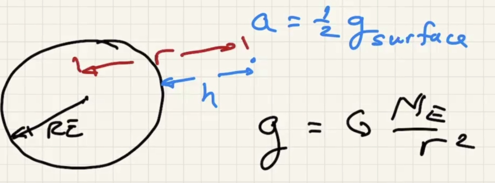

Annoucements
- HW 13 due tonight
- HW 14 due fri
- Quiz 7 posted due 4/16
- Centripetal force lab due Fri
- Recitation today: attend either session
- Lab on Thurs: attend either session
- Schedule update by thurs
Today
- More centripetal force
Clicker questions
Problems
- Ball hanging from pendulum inside moving car turning at 10 mph, what is the radius of the turn?
- How fast can a car travel and make a turn without slipping? (Assume road is perfectly flat). What is the force thats bending the car in a circle? The friction of the tires.
The maximum is when
- A car is safely negotiating an unbanked circular turn at a speed of 21 m/s. The maximum static frictional force acts on the tires. Suddently a wet patch in the road reduces the maximum static frictional force by a factor of three. If the car is to continue safely around the curve, to what speed must the drive slow the car?
A banked turn
Formulas for friction/banked turning
Acceleration in the y direction is just gravity
Orbits
The force that pulls the apple toward the earth is the same force that keeps the moon in orbit. The force of gravity isn't a constant, it depends on the distance away from the object squared.
The force is directly proportional to the mass involved. Inversely proportional to the distance separation squared.

Gravitational force is always an attractive force.

